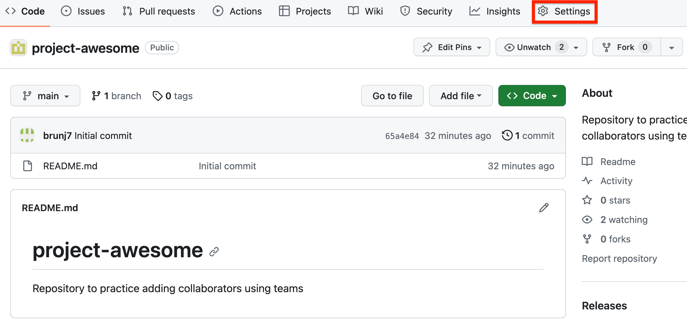

GitHub Teams
What are GitHub teams
You can use teams to manage access for people in an organization and for sending notifications (you can @team as you will do with @user in issues, commit messages and more). Teams are a great way to manage access to repositories. You can add specific people to different teams and then you can use those teams to provide similar access to repositories. If you are familiar with Google Groups and how they can be used to provide access to folders in Google drive, this is the same concept.
Teams are very convenient when a set of collaborators work on the same project and therefore need the same access to different repositories within your organization. You can simply add the team to a specific repository and all the team members will be added to the repositories instead of having to add each user individually.
Create a team
In the navigation bar at the top of your organization page, click on the Teams tab. Normally this is the page you use to see and manage the existing teams of your organization. Since we do not have teams yet, this page is providing a short overview of what teams can be used for. Click on the New Team green button at the bottom to start creating your first team.
Proved the name and a short description of your team. We recommend to let the other options to their default settings.
Your team has been created, but as of now you are the only member. Let’s invite some collaborators by clicking on the Add a member button on the top right.
On this new window you can search for GitHUb users by their username. If you do not know their username you can search by their full names. Note that if there are no pictures associated to the profile you fund or are not sure it is the right person, we recommend to not add this person at this time and to reach out asking for their username (which is unique). If you are sure you found the right persons, you can click on Invite.
You collaborators will receive an invitation to join the team. They will have to accept the invitation before they can use the benefits (access to repositories, …) associated with the team. Once your collaborators have accepted your team should look like below.
OK, let’s create a second team! In this example we will create a Reserach Facilitators team with two members.
Once your GitHub organization has teams, you will the number of existing teams next to the Teams tab.
Leveraging teams
Let’s create a new repository and use our newly created teams to add several collaborators at once.
Under your newly created organization, create a new repository with the following settings:

Once the repository created, click on the Settings tab (top right in the grey bar)

{fig-align=“center” width=70%}On the left panel, click on Collaborators and teams and then click on the green button Add teams
Start typing the name of the team you would like to add. Suggestions of teams should come up as you type. Select the relevant team by clicking on the suggestion.
For close collaborators, we recommend to use the Maitain level of access that provides a good blend of people being able to do most of the actions they will need to do while not being allowed to conduct destructive actions on accident (like deleting the entire repository). For collaborators you are less familiar with, including their familiarity with GitHub, you might want to start with the Write access.
Once the team added, your settings should look as follow:
The good news is now if you add a collaborator to a specific team, this person will automatically gain access to all the repositories that team as access to! This will streamline the on and off boarding process of your team memebers.